Let \(f(x)=2x^2-3\). Evaluate:
Use the table for \(f(x)\).
| \(x\) | -2 | -1 | 0 | 1 | 2 |
|---|---|---|---|---|---|
| \(f(x)\) | 7 | 3 | -1 | 3 | 7 |
Write the inequality \(-2 \le x < 5\) in interval notation.
Write the interval shown on the number line in interval notation.
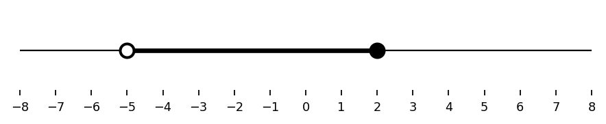
Use the graph to determine the range of the function. Write your answer in interval notation.
Use the graph to determine the domain of the function. Write your answer in interval notation.
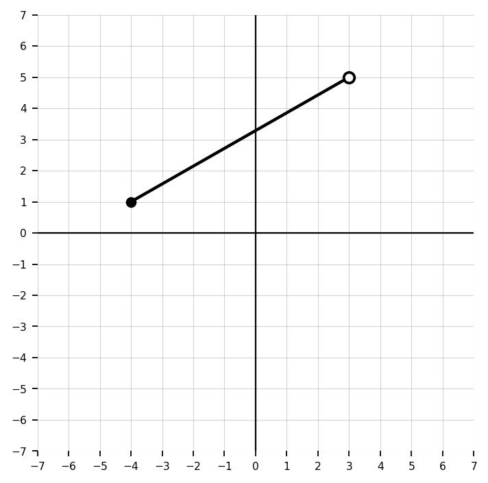
Identify the value of \(a\), \(h\), and \(k\) in \(g(x)=-3f(x+2)-5\).
Complete the statement: If \(\lim_{x\to a^-} f(x)=3\) and \(\lim_{x\to a^+} f(x)=3\), then \(\lim_{x\to a} f(x)=\underline{\hspace{1in}}\).
The graph of \(f(x)=2x-3\) and the horizontal line \(y=5\) are shown. Use the graph to solve \(f(x)=5\), then verify algebraically.
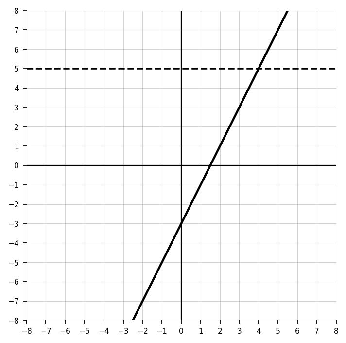
The number line shows a solution set.
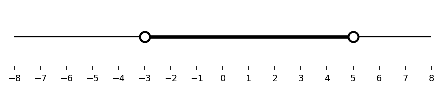
Determine the domain and range of the graphed function. Use interval notation.
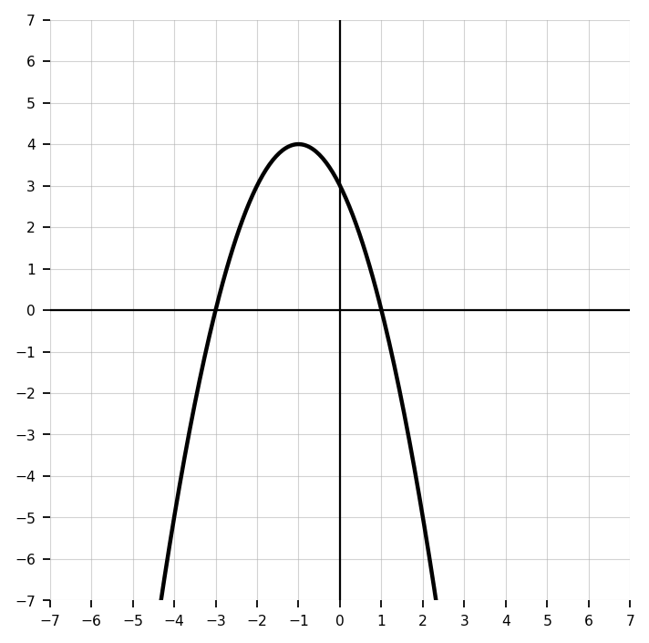
Write an equation for the graphed quadratic transformation.
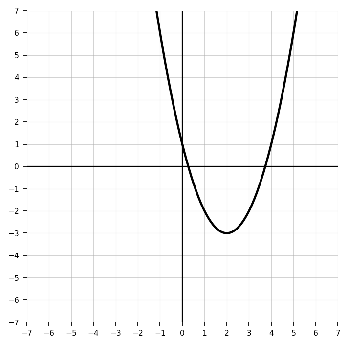
Describe the transformations of \(g(x)=4\sqrt{x+5}-1\) from the parent function.
Use the graph to determine the left-hand limit, right-hand limit, function value, and whether the two-sided limit exists at \(x=0\).
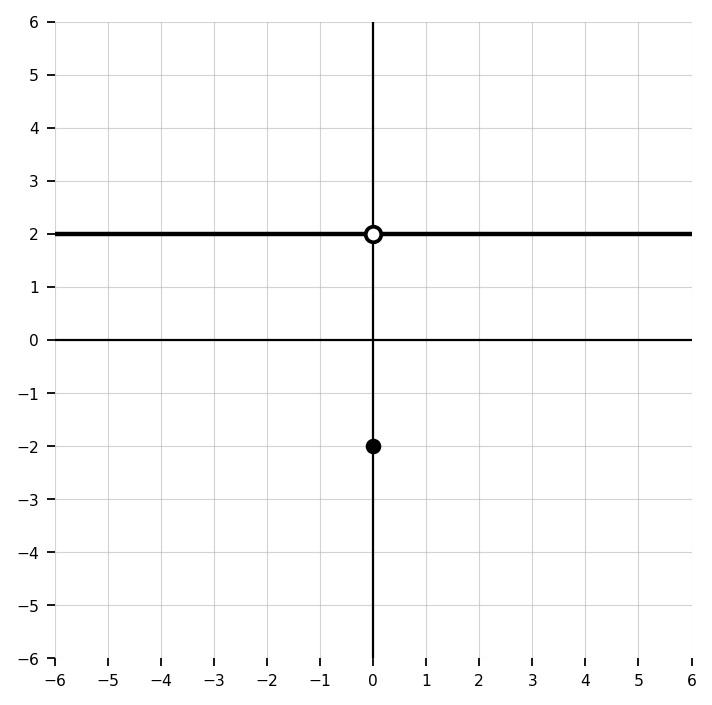
Use the graph to determine \(\lim_{x\to 2} f(x)\), \(f(2)\), and whether the function value affects the limit.
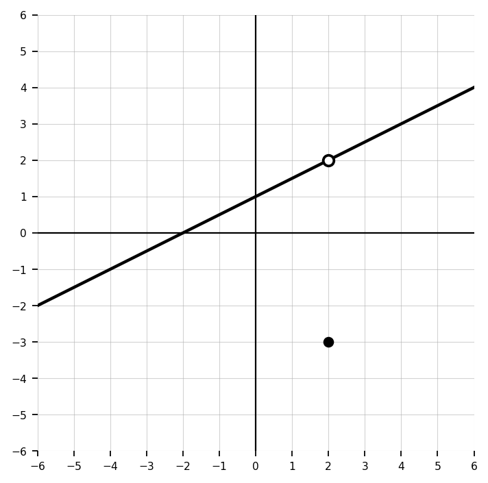
Graph \(-4 \le x < 2\) on a number line. Then write one sentence explaining your endpoint choices.
The graph of \(f(x)=(x+2)(x-3)\) is shown.
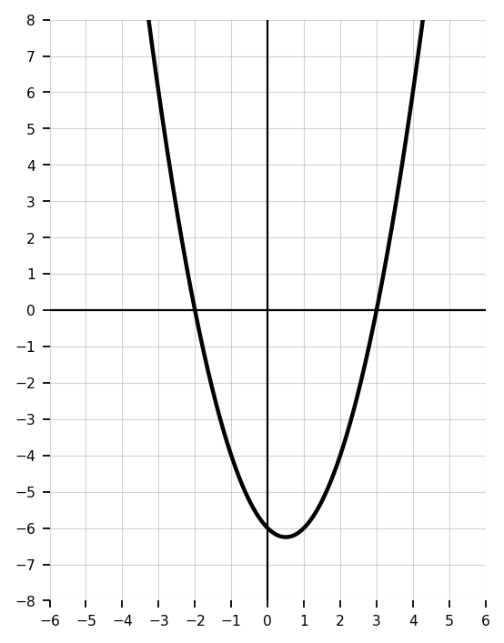
A student drew the number line shown for the inequality \(-5 < x < -1\).
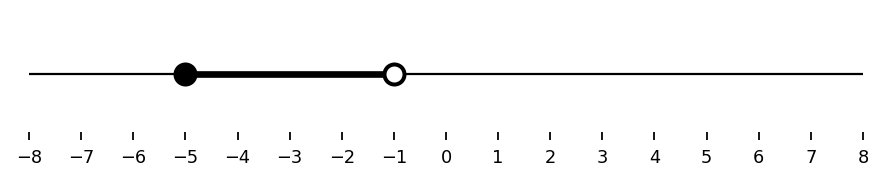
Use the graph to determine the domain and range. Then justify how endpoint types and arrows affected your answer.
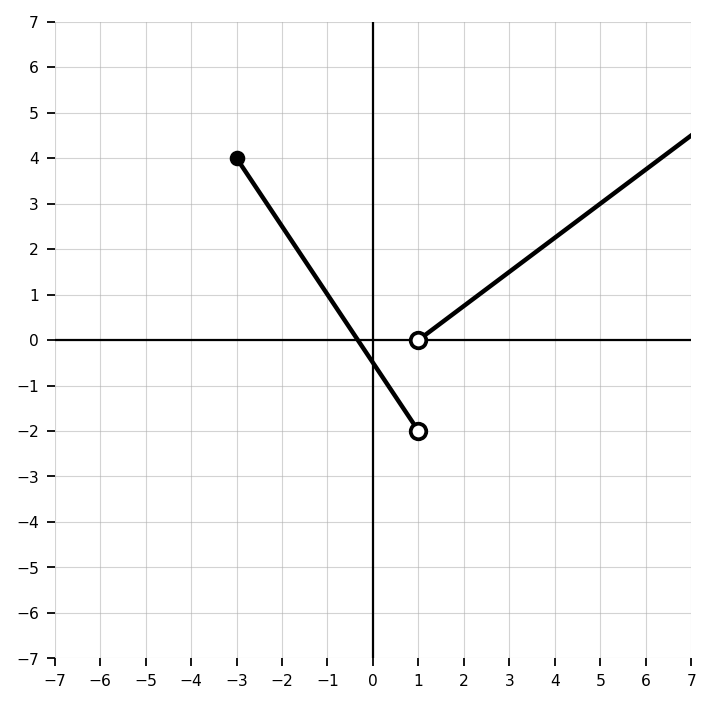
A student says \(g(x)=f(x-5)\) shifts the graph left 5 units because of the minus sign. Explain the error and give the correct transformation.
Use the graph to write an equation and justify each transformation using \(a\), \(h\), and \(k\).
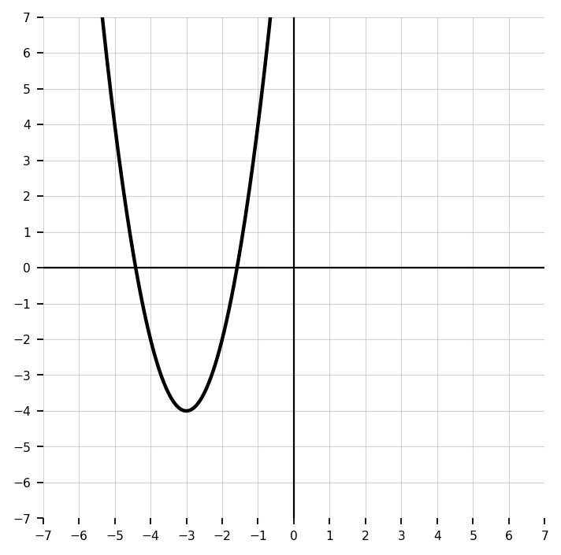
Use the graph to classify each special behavior shown as a jump, hole, point value difference, or vertical asymptote. Then state which limits exist.
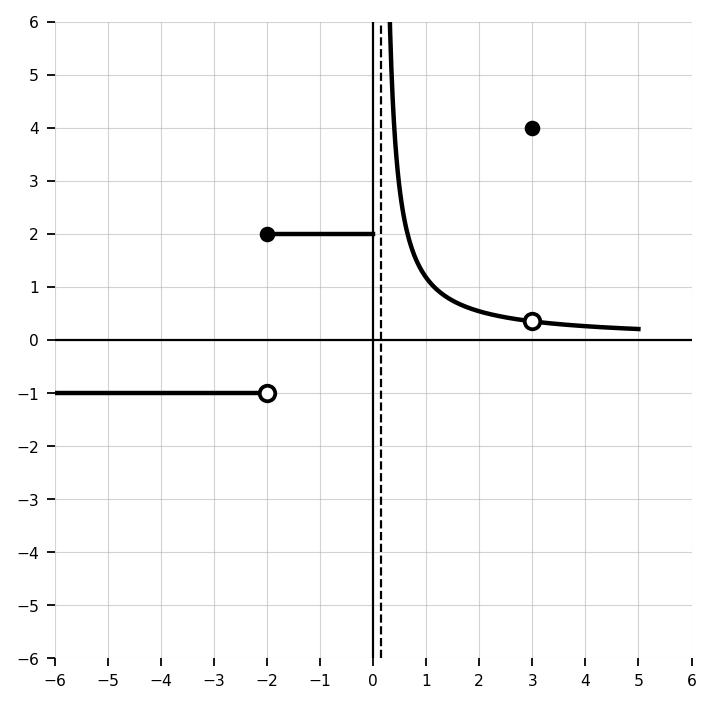
A student says, “If \(f(a)\) is undefined, then \(\lim_{x\to a} f(x)\) cannot exist.” Explain why this statement is false.
Compare the domains of $f(x)=\sqrt{x-3}$ and $g(x)=\frac{1}{x-3}$. Explain why the restrictions are different.
The graph models the height \(A(t)\), in meters, of an object after \(t\) seconds.
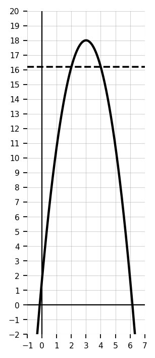
The number line could represent the number of months a student may participate in a program.
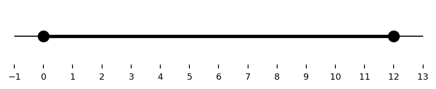
A school sells tickets for a dance. Tickets cost $8 each, and the room can hold at most 250 students. Define a function for revenue based on tickets sold. State a reasonable domain and range, and explain why both are restricted.
A graph is shown. Write a possible equation and explain why more than one equation might be possible if the parent function is not identified.
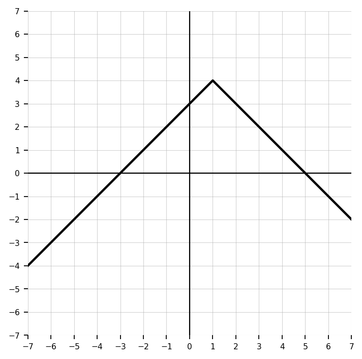
Use the graph to write a complete limit analysis at each special \(x\)-value shown. Include left-hand limits, right-hand limits, function values, and whether each two-sided limit exists.
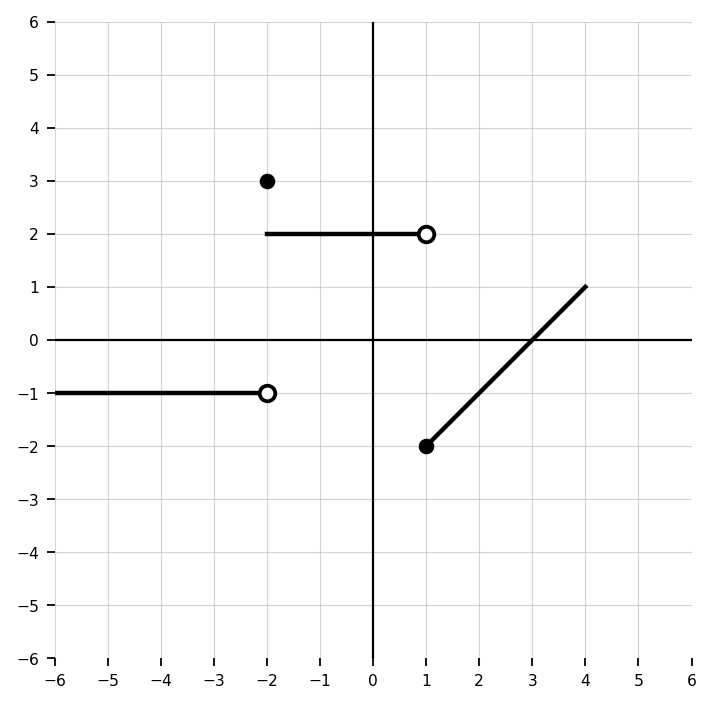
Design a graph that includes a hole, a jump, and a point where the limit exists but is not equal to the function value. Label the important points and write one limit statement for each feature.
Create two different transformed functions using the same parent function \(f(x)\) that both have a vertical shift up 2 but different stretches or reflections. Explain how their graphs would differ.
Write an equation, table, or graph description for a function with domain $[-2,6]$ and range $[1,9]$. Then explain how your representation guarantees both the domain and range.